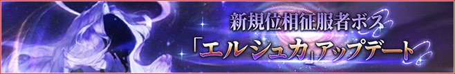
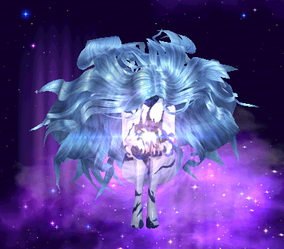
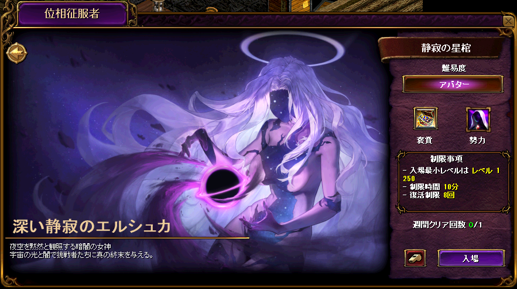
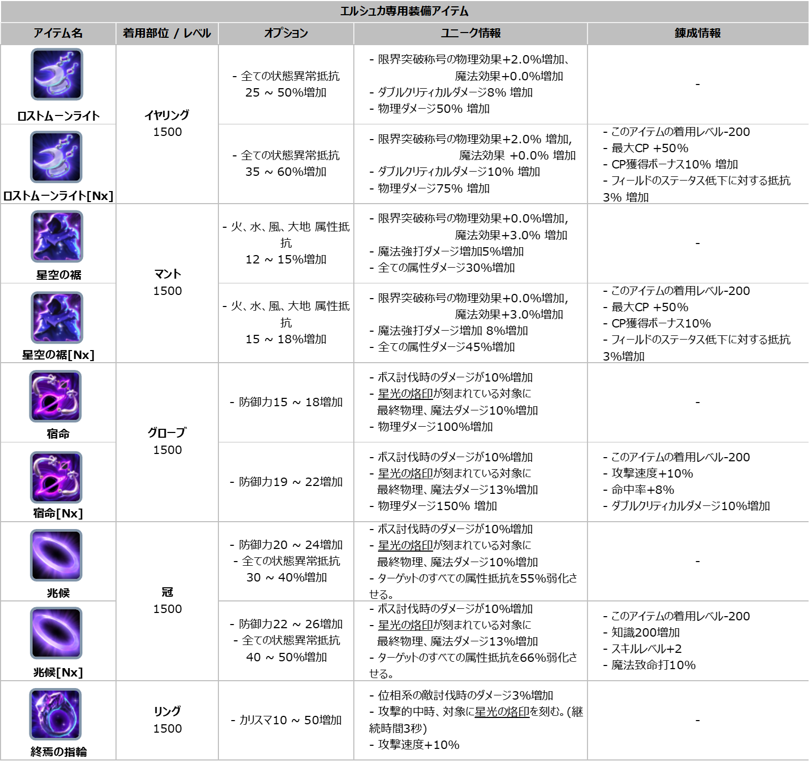
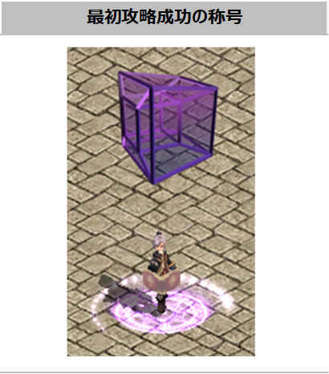

メニュー
トップ >>
モンスター >>
位相征服者エルシュカ
1250レベルから挑戦できる位相征服者の2体目「深い静寂のエルシュカ」。
ヒペリオンと同じ位相征服者システムの新規ボスで、登場フィールドは「静寂の星棺」。
2025年12月11日 (ver 0.0868) 実装
ストーリー
静寂の星棺 入場方法
フィールド情報・デバフ
クリア報酬: エルシュカ専用装備 / 775〜1250ULT
称号「位相探求者」(初回クリア限定)
ヒペリオンとの違い
悪魔バルザロズが開いた異次元ゲートから渡ってきた異界の神的な存在の一つ。
故郷の次元では 「ヒペリオン」と世界の主導権をめぐって対立 した。
静かで広大な暗闇の中の穏やかな光を愛し、派手な光と秩序整然な生を嫌う性格。
ヒペリオンとは根本的に合わず、無気力で厭世的な態度を放つ彼女の性格上、誰かには威嚇となるため、敵対関係から自由ではない。
自分の実態を様々な次元に分け合う能力を持つ位相征服者であり、人工的な変化や絶対的な判断を有害なものと規定する。
エルシュカの圏域内では自然の流れを重視し、これもまたヒペリオンとは対比される。お互いの追従者たちも当事者のように仲が悪い。
※ サーバとの接続切れ・強制終了・ログイン画面への移動・キャラクター選択画面への移動など、ゲーム内で制限される状況が一定時間経過した場合、ダンジョンは初期化され入場回数はカウントされません。
静寂の星棺では一部の能力値が無効化されるデバフ効果が適用されます。
※ ヒペリオンと違いトレジャーボックス経由ではなく、装備が直接ドロップする方式。
■ エルシュカ専用装備の特徴
・着用レベル 1500 の高位装備
・各装備に 星光の烙印 オプションが付与される (Nx 版あり)
・イヤリング / マント / グローブ / 鎧 / リング など複数部位が用意
★ 星光の烙印: 星光の烙印が刻まれているモンスターに対して、追加の最終物理ダメージ / 最終魔法ダメージを与えることができる特殊オプション。
■ エルシュカ専用装備アイテム一覧 (公式画像)
各アイテムのオプション詳細・ユニーク情報・鍛冶情報は上の画像をご確認ください。
※ ヒペリオンを先にクリア済みの場合、エルシュカクリアでは「位相探求者」称号は支給されません (称号は位相征服者シリーズ全体で1個)。
→ 位相征服者ヒペリオン のページ
出典: 公式お知らせ「新規位相征服者ボス『深い静寂のエルシュカ』についてのご案内」(2025年12月11日)
位相征服者エルシュカ

1250レベルから挑戦できる位相征服者の2体目「深い静寂のエルシュカ」。
ヒペリオンと同じ位相征服者システムの新規ボスで、登場フィールドは「静寂の星棺」。
2025年12月11日 (ver 0.0868) 実装
ストーリー
静寂の星棺 入場方法
フィールド情報・デバフ
クリア報酬: エルシュカ専用装備 / 775〜1250ULT
称号「位相探求者」(初回クリア限定)
ヒペリオンとの違い
ストーリー

悪魔バルザロズが開いた異次元ゲートから渡ってきた異界の神的な存在の一つ。
故郷の次元では 「ヒペリオン」と世界の主導権をめぐって対立 した。
静かで広大な暗闇の中の穏やかな光を愛し、派手な光と秩序整然な生を嫌う性格。
ヒペリオンとは根本的に合わず、無気力で厭世的な態度を放つ彼女の性格上、誰かには威嚇となるため、敵対関係から自由ではない。
自分の実態を様々な次元に分け合う能力を持つ位相征服者であり、人工的な変化や絶対的な判断を有害なものと規定する。
エルシュカの圏域内では自然の流れを重視し、これもまたヒペリオンとは対比される。お互いの追従者たちも当事者のように仲が悪い。
静寂の星棺 入場方法
| 入場条件 | 1250レベル 前提クエスト「新たな位相征服者」をクリア |
|---|---|
| 入場人数 | 1〜4人 |
| 入場回数 | 週1回クリアを基準として、週1回入場可能 (入場制限は毎週月曜日の 00:00 に初期化) |
| 制限時間 | 10分 (ヒペリオンの30分より大幅に短い) |
| 復活制限 | 8回 (オプション「復活確率」効果は適用されない / スキルでの復活はプレイヤーあたり1回のみ) |
| 入場NPC | 地下界の大使の所在 (漆黒の城 306,283) の 「ケルトル」 または 「イケル」 ※ メインクエスト1のチャプター3「変身」とチャプター4「いつか戻る場所」進行状況によって話しかけるNPCが変わります (チャプター3,4 完了の場合: イケル / 未完了の場合: ケルトル) |
| ガイド誘導 | ガイドシステムから「位相征服者」を選ぶと、地下界の大使の所在 (漆黒の城 308,287) に移動します。 |
※ サーバとの接続切れ・強制終了・ログイン画面への移動・キャラクター選択画面への移動など、ゲーム内で制限される状況が一定時間経過した場合、ダンジョンは初期化され入場回数はカウントされません。
フィールド情報・デバフ
静寂の星棺に入場後、待機地域の中にある 「ポータル」 をクリックしてエルシュカがいる戦闘フィールドに移動します。静寂の星棺では一部の能力値が無効化されるデバフ効果が適用されます。
- [回避補正無視]効果の減少
- [命中補正無視]効果の減少
- ソウルガード使用不可
- 最大CP維持効果使用不可 (ヒペリオン戦には無いエルシュカ専用デバフ)
クリア報酬: エルシュカ専用装備 / 775〜1250ULT
「深い静寂のエルシュカ」をクリアすると、エルシュカ専用装備アイテム もしくは 775〜1250ULT アイテムを獲得できます。※ ヒペリオンと違いトレジャーボックス経由ではなく、装備が直接ドロップする方式。

■ エルシュカ専用装備の特徴
・着用レベル 1500 の高位装備
・各装備に 星光の烙印 オプションが付与される (Nx 版あり)
・イヤリング / マント / グローブ / 鎧 / リング など複数部位が用意
★ 星光の烙印: 星光の烙印が刻まれているモンスターに対して、追加の最終物理ダメージ / 最終魔法ダメージを与えることができる特殊オプション。
■ エルシュカ専用装備アイテム一覧 (公式画像)

各アイテムのオプション詳細・ユニーク情報・鍛冶情報は上の画像をご確認ください。
称号「位相探求者」(初回クリア限定)
深い静寂のエルシュカを 最初にクリアしたキャラには、名誉称号エフェクト 「位相探求者」 が付与されます。※ ヒペリオンを先にクリア済みの場合、エルシュカクリアでは「位相探求者」称号は支給されません (称号は位相征服者シリーズ全体で1個)。

ヒペリオンとの違い
| 項目 | ヒペリオン | エルシュカ |
|---|---|---|
| 登場フィールド | 太陽の関門 | 静寂の星棺 |
| 制限時間 | 30分 | 10分 |
| 追加デバフ | (基本デバフのみ) | 最大CP維持効果使用不可 |
| クリア報酬 | トレジャーボックス[ヒペリオン] | エルシュカ専用装備 (Lv1500) / 775〜1250ULT 直接 |
| 専用オプション | － | 星光の烙印 (烙印モンスターに最終ダメ追加) |
| 前提クエスト | 位相征服者クエスト (1250Lvで自動受注) | 新たな位相征服者クエスト |
→ 位相征服者ヒペリオン のページ
出典: 公式お知らせ「新規位相征服者ボス『深い静寂のエルシュカ』についてのご案内」(2025年12月11日)